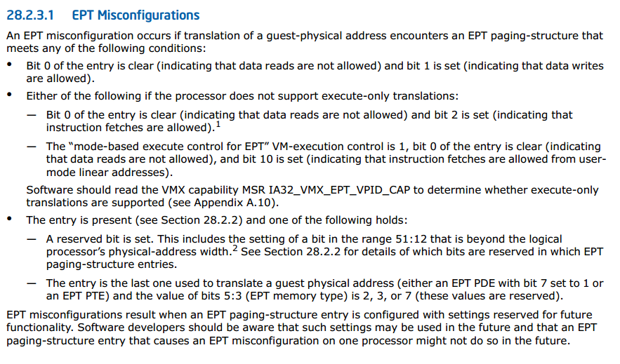

我们知道X86体系结构上对设备进行访问可以通过PIO方式和MMIO(Memory Mapped I/O)两种方式进行， 那么QEMU-KVM具体是如何实现设备MMIO访问的呢？
MMIO是直接将设备I/O映射到物理地址空间内，虚拟机物理内存的虚拟化又是通过EPT机制来完成的，
那么模拟设备的MMIO实现也需要利用EPT机制．虚拟机的EPT页表是在EPT_VIOLATION异常处理的时候建立起来的，
对于模拟设备而言访问MMIO肯定要触发VM_EXIT然后交给QEMU/KVM去处理，那么怎样去标志MMIO访问异常呢？
查看Intel SDM知道这是通过利用EPT_MISCONFIG来实现的．那么EPT_VIOLATION与EPT_MISCONFIG的区别是什么?
EXIT_REASON_EPT_VIOLATION is similar to a "page not present" pagefault.
EXIT_REASON_EPT_MISCONFIG is similar to a "reserved bit set" pagefault.
EPT_VIOLATION表示的是对应的物理页不存在，而EPT_MISCONFIG表示EPT页表中有非法的域．
那么这里有２个问题需要弄清楚．
1 KVM如何标记EPT是MMIO类型 ?
hardware_setup时候虚拟机如果开启了ept支持就调用ept_set_mmio_spte_mask初始化shadow_mmio_mask，
设置EPT页表项最低3bit为：110b就会触发ept_msconfig（110b表示该页可读可写但是还未分配或者不存在，这显然是一个错误的EPT页表项）.
static void ept_set_mmio_spte_mask(void)
{
/*
* EPT Misconfigurations can be generated if the value of bits 2:0
* of an EPT paging-structure entry is 110b (write/execute).
*/
kvm_mmu_set_mmio_spte_mask(VMX_EPT_RWX_MASK,
VMX_EPT_MISCONFIG_WX_VALUE);
}
同时还要对EPT的一些特殊位进行标记来标志该spte表示MMIO而不是虚拟机的物理内存，例如这里
(1)set the special mask: SPTE_SPECIAL_MASK．
(2)reserved physical address bits: the setting of a bit in the range 51:12 that is beyond the logical processor’s physical-address width
关于EPT_MISCONFIG在SDM中有详细说明．

void kvm_mmu_set_mmio_spte_mask(u64 mmio_mask, u64 mmio_value)
{
BUG_ON((mmio_mask & mmio_value) != mmio_value);
shadow_mmio_value = mmio_value | SPTE_SPECIAL_MASK;
shadow_mmio_mask = mmio_mask | SPTE_SPECIAL_MASK;
}
EXPORT_SYMBOL_GPL(kvm_mmu_set_mmio_spte_mask);
static void kvm_set_mmio_spte_mask(void)
{
u64 mask;
int maxphyaddr = boot_cpu_data.x86_phys_bits;
/*
* Set the reserved bits and the present bit of an paging-structure
* entry to generate page fault with PFER.RSV = 1.
*/
/* Mask the reserved physical address bits. */
mask = rsvd_bits(maxphyaddr, 51);
/* Set the present bit. */
mask |= 1ull;
#ifdef CONFIG_X86_64
/*
* If reserved bit is not supported, clear the present bit to disable
* mmio page fault.
*/
if (maxphyaddr == 52)
mask &= ~1ull;
#endif
kvm_mmu_set_mmio_spte_mask(mask, mask);
}
KVM在建立EPT页表项之后设置了这些标志位再访问对应页的时候会触发EPT_MISCONFIG退出了，然后调用handle_ept_misconfig --> handle_mmio_page_fault来完成MMIO处理操作．
KVM内核相关代码：
handle_ept_misconfig --> kvm_emulate_instruction --> x86_emulate_instruction --> x86_emulate_insn
writeback
--> segmented_write
--> emulator_write_emulated
--> emulator_read_write
--> emulator_read_write_onepage
--> ops->read_write_mmio [write_mmio]
--> vcpu_mmio_write
--> kvm_io_bus_write
--> __kvm_io_bus_write
--> kvm_iodevice_write
--> dev->ops->write [ioeventfd_write]
最后会调用到ioeventfd_write，写eventfd给QEMU发送通知事件
/* MMIO/PIO writes trigger an event if the addr/val match */
static int
ioeventfd_write(struct kvm_vcpu *vcpu, struct kvm_io_device *this, gpa_t addr,
int len, const void *val)
{
struct _ioeventfd *p = to_ioeventfd(this);
if (!ioeventfd_in_range(p, addr, len, val))
return -EOPNOTSUPP;
eventfd_signal(p->eventfd, 1);
return 0;
}
2 QEMU如何标记设备的MMIO ?
这里以e1000网卡模拟为例，设备初始化MMIO时候时候注册的MemoryRegion为IO类型（不是RAM类型）．
static void
e1000_mmio_setup(E1000State *d)
{
int i;
const uint32_t excluded_regs[] = {
E1000_MDIC, E1000_ICR, E1000_ICS, E1000_IMS,
E1000_IMC, E1000_TCTL, E1000_TDT, PNPMMIO_SIZE
};
// 这里注册MMIO，调用memory_region_init_io，mr->ram = false！！！
memory_region_init_io(&d->mmio, OBJECT(d), &e1000_mmio_ops, d,
"e1000-mmio", PNPMMIO_SIZE);
memory_region_add_coalescing(&d->mmio, 0, excluded_regs[0]);
for (i = 0; excluded_regs[i] != PNPMMIO_SIZE; i++)
memory_region_add_coalescing(&d->mmio, excluded_regs[i] + 4,
excluded_regs[i+1] - excluded_regs[i] - 4);
memory_region_init_io(&d->io, OBJECT(d), &e1000_io_ops, d, "e1000-io", IOPORT_SIZE);
}
结合QEMU-KVM内存管理知识我们知道，
QEMU调用kvm_set_phys_mem注册虚拟机的物理内存到KVM相关的数据结构中的时候
会调用memory_region_is_ram来判断该段物理地址空间是否是RAM设备，
如果不是RAM设备直接return了．
static void kvm_set_phys_mem(KVMMemoryListener *kml,
MemoryRegionSection *section, bool add)
{
......
if (!memory_region_is_ram(mr)) {
if (writeable || !kvm_readonly_mem_allowed) {
return; // 设备MR不是RAM但可以写，那么这里直接return不注册到kvm里面
} else if (!mr->romd_mode) {
/* If the memory device is not in romd_mode, then we actually want
* to remove the kvm memory slot so all accesses will trap. */
add = false;
}
}
......
}
对于MMIO类型的内存QEMU不会调用kvm_set_user_memory_region对其进行注册，
那么KVM会认为该段内存的pfn类型为KVM_PFN_NOSLOT，
进而调用set_mmio_spte来设置该段地址对应到spte，
而该函数中会判断pfn是否为NOSLOT标记以确认这段地址空间为MMIO．
static bool set_mmio_spte(struct kvm_vcpu *vcpu, u64 *sptep, gfn_t gfn,
kvm_pfn_t pfn, unsigned access)
{
if (unlikely(is_noslot_pfn(pfn))) {
mark_mmio_spte(vcpu, sptep, gfn, access);
return true;
}
return false;
}
3 总结
MMIO是通过设置spte的保留位来标志的．
- 虚拟机内部第一次访问MMIO的gpa时，发生了EPT_VIOLATION然后check gpa发现对应的pfn不存在（QEMU没有注册），那么认为这是个MMIO，于是
set_mmio_spte来标志它的spte是一个MMIO． - 后面再次访问这个gpa时就发生EPT_MISCONFIG了，进而愉快地调用
handle_ept_misconfig->kvm_mmu_page_fault->x86_emulate_instruction来处理所有的MMIO操作了．